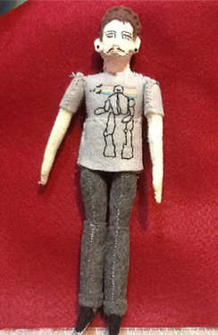

About/CV
| Artist | Educator | Strategist |
| Designer | Developer | Musician |
About
Ben Severns is an interdisciplinary artist whose studio work is centered around the need for some way out of the theoretically evitable cycle of Spectacular distraction and self-involvement that permeates contemporary life.
Shifting media as it suits the project, his work has been exhibited throughout the United States, including at Boston University, the Institute of Contemporary Art at the Maine College of Art, the Science Museum of Minnesota, the Minneapolis Institute of Art, Public Functionary Gallery, the Walker Art Center, and others.
His work in community development and social justice organizations has seen him act as a project manager, organizer, and educator. His work is held in private collections in the United States and Brazil.
CV
Appointments
- Education Equipment & Services Lead — createMPLS (Minneapolis, MN) — Present
- Adjunct Faculty — Minneapolis College of Art & Design (Minneapolis, MN) — 2013–2023
- Adjunct Faculty — Augsburg University (Minneapolis, MN) — 2015–2022
- Media Arts Instructor (9–12) — PiM Arts High School (Eden Prairie, MN) — 2018–2020
Education
- Maine College of Art — Portland, ME — Master of Fine Arts: Studio Art
- Minneapolis College of Art and Design — Minneapolis, MN — Bachelor of Fine Arts: Fine Arts Studio
Selected Exhibitions
- 2020 — Light Spa: Night Walk, East St. Paul, MN
- 2019 — Energy, Made Here, Minneapolis, MN
- 2018 — Wolfpack, Arcana Masonic Lodge, Minneapolis, MN
- 2017 — Out of the Blue, Greylight Projects, Hoensbroek, DE
- 2017 — Future, Made Here, Minneapolis, MN
- 2015 — Body and Machine, Northrup King Gallery, Minneapolis, MN
- 2014 — P.O.E.P.O.L., Good CARma, Minneapolis, MN
- 2014 — Faster Than Fast, The Bank, Knoxville, IA
- 2014 — Make it Move, Northrup King Gallery, Minneapolis, MN
- 2013 — Bright Lights, Public Functionary, Minneapolis, MN
- 2013 — Boston Young Contemporaries, Boston University, Boston, MA
- 2013 — You and I, Alone, Geno’s Rock Club, Portland, ME
- 2013 — Master’s Thesis Exhibition, Maine College of Art, Portland, ME
- 2012 — MFA Retrospective, Maine College of Art, Portland, ME
- 2012 — Ben’s Black Flag, The Blue Ox, Portland, ME
- 2012 — Detritus, Octopi Gallery, Portland, ME
- 2009 — Bury, Art of This Gallery, Minneapolis, MN
Curated
- 2016 — DANGER, Arcana Mason Lodge, Minneapolis, MN
- 2011 — MFA Retrospective, Maine College of Art, Portland, ME (with P. Nadal and T.J. Young)
- 2010 — No Longer, Fallout Urban Art Center, Minneapolis, MN
- 2010 — In The Heart, To Soho, Minneapolis, MN (with N. Osborn and M. Seagren)
Awards
- 2013 — Young Family Scholarship, Maine College of Art, Portland, ME
- 2012 — Presidential Graduate Grant, Maine College of Art, Portland, ME
- 2011 — Presidential Graduate Grant, Maine College of Art, Portland, ME
Selected Projects (Tools for Others)
- MOARkNOBS-42 — Open-hardware MIDI controller and teaching platform (Teensy 4.x, custom PCBs, firmware/PlatformIO); course backbone for maker studios
- FaceTimes — Privacy-first, opt-in face-detection capture with on-screen data-flow map, save/erase controls, and an avatar-generation path
- Jetson Soundscape — Multi-timbral AV pipeline (video → character/timbre features → 20-voice industrial texture), Syphon-friendly for live mixes
- Print-Farm Modernization — Marlin/BLTouch setups, SKR Mini swaps, Stratasys Mojo/UPrint conversions, shop SOPs for youth labs
- AE Modular Utilities — Custom bus/power and hand-made cabling for resilient student rigs
- Teensy DSP Unit — Low-pass, delay/feedback, controllable “dirt,” stereoization, seeded randomness, and LED chaos meter for performance pedagogy
Selected Discography (as B_S_)
Technical Skills
- Code: Processing/Java, p5.js/JS, Python, C/C++ (Arduino/Teensy), PlatformIO, Git
- Audio: DSP fundamentals (filters, delay, feedback), Reaper/BandLab workflows, MIDI
- Fabrication: 3D printing (Cura, Marlin tuning), laser/CNC, MIG, electronics, soldering
- Platforms: Teensy, Arduino, Raspberry Pi, NVIDIA Jetson, TouchDesigner, GitHub
- Pedagogy: K–12 to college; inclusive, project-based learning; curriculum build-outs; shop safety; documentation as a creative act